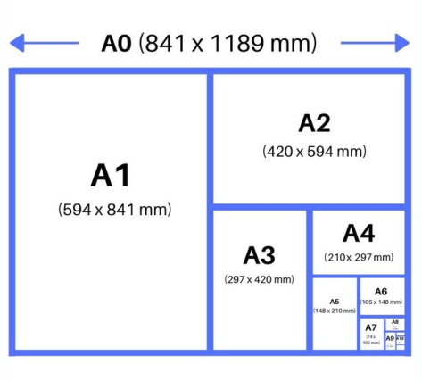

Contenidos | Anterior (3 Diseño de algoritmos recursivos) | Próximo (5 Regresión lineal)
11.4 Práctica de Recursión
Ejercicios
Ejercicio 11.2: Números triangulares
Escribí una función que calcule recursivamente el n-ésimo número triangular (es decir, el número 1 + 2 + 3 + ... + n).
Fijate que este ejercicio es un caso particular de la función sumar_enteros(desde, hasta) que implementaste en el Ejercicio 7.6. La implementación que hiciste en el primer inciso de ese ejercicio es una forma de reemplazar la recursión por un ciclo. La implementación que hiciste en el segundo inciso es mucho más eficiente.
Ejercicio 11.3: Dígitos
Escribí una función recursiva que reciba un número positivo, n, y devuelva la cantidad de dígitos que tiene.
Ejercicio 11.4: Potencias
Escribí una función recursiva que reciba 2 enteros, n y b, y devuelva
True si n es potencia de b.
Ejemplos:
es_potencia(8, 2) -> True
es_potencia(64, 4) -> True
es_potencia(70, 10) -> False
es_potencia(1, 2) -> True
Ejercicio 11.5: Subcadenas
Escribí una funcion recursiva que reciba como parámetros dos cadenas a y b, y devuelva una lista con las posiciones en donde se encuentra b dentro de a.
Ejemplo:
posiciones_de('Un tete a tete con Tete', 'te') -> [3, 5, 10, 12, 21]
Ejercicio 11.6: Paridad
Escribí dos funciones mutualmente recursivas par(n) e impar(n) que
determinen la paridad del numero natural dado, usando solo que:
- 1 es impar.
- Un número mayor que uno es impar (resp. par) si su antecesor es par (resp. impar).
Ejercicio 11.7: Máximo
Escribí una funcion recursiva que encuentre el mayor elemento de una lista (sin usar max()).
Ejercicio 11.8: Replicar
Escribí una función recursiva para replicar los elementos de una lista una cantidad n de veces. Por ejemplo:
replicar([1, 3, 3, 7], 2) -> ([1, 1, 3, 3, 3, 3, 7, 7])
Sugerencia: hacé la recursión en el largo de la lista.
Ejercicio 11.9: Pascal
El triángulo de Pascal es un arreglo triangular de números que se define de la siguiente manera: Las filas se enumeran desde n = 0, de arriba hacia abajo. Los valores de cada fila se enumeran desde k = 0 (de izquierda a derecha). Los valores que se encuentran en los bordes del triángulo son todos unos. Cualquier otro valor se calcula sumando los dos valores contiguos de la fila de arriba.

Escribí la función recursiva pascal(n, k) que calcula el valor que se
encuentra en la fila n y la columna k. Guardá tu función en el archivo larenga.py para entregar.
Ejemplo:
>>> pascal(5, 2)
10
Ejercicio 11.10: Combinatorios
Escribí una función recursiva que reciba una lista de caracteres únicos, y un número k, e imprima todas las posibles cadenas de longitud k formadas con los caracteres dados (permitiendo caracteres repetidos).
Ejemplo:
>>> combinaciones(['a', 'b', 'c'], 2)
aa ab ac ba bb bc ca cb cc
Ejercicio 11.11: Búsqueda binaria
Escribí una función recursiva que implemente la búsqueda binaria de un elemento e en una lista ordenada lista. La función debe devolver simplemente True o False indicando si el elemento está o no en la lista. Para esto completá el siguiente código:
def bbinaria_rec(lista, e):
if len(lista) == 0:
res = False
elif len(lista) == 1:
res = lista[0] == e
else:
medio = len(lista)//2
# completar
return res
Guardá tu solución en el archivo bbin_rec.py.
Ejercicio 11.12: Envolviendo a Fibonacci
Como vimos, la implementación recursiva inmediata del cálculo del número de Fibonacci (F(n) = F(n-1) + F_(n-2), F(0) = 0, F(1)= 1) es ineficiente porque muchas de las ramas calculan reiteradamente los mismos valores.
Escribí una función fibonacci(n) que calcule el n-ésimo número
de Fibonacci de forma recursiva pero que utilice un diccionario para almacenar
los valores ya computados y no computarlos más de una vez.
Observación: Será necesario implementar una función wrapper (es decir, una función que envuelva a otra) para cumplir con la firma de la función pedida. Podés trabajar en un script en blanco o completar el siguiente código.
def fibonacci(n):
"""
Toma un entero positivo n y
devuelve el n-ésimo número de Fibonacci
donde F(0) = 0 y F(1) = 1.
"""
def fibonacci_aux(n, dict_fibo):
"""
Calcula el n-ésimo número de Fibonacci de forma recursiva
utilizando un diccionario para almacenar los valores ya computados.
dict_fibo es un diccionario que guarda en la clave 'k' el valor de F(k)
"""
if n in dict_fibo.keys():
F = dict_fibo[n]
else:
?? # completar
return ?? # completar
dict_fibo = {0:0, 1:1}
F, dict_fibo = fibonacci_aux(n, dict_fibo)
return F
Guardala en el archivo fibonacci_envuelto.py.
Ejercicio 11.13: Hojas ISO y recursión
La norma ISO 216 especifica tamaños de papel. Es el estándar que define el popular tamaño de papel A4 (210 mm de ancho y 297 mm de largo). Las hojas A0 miden 841 mm de ancho y 1189 mm de largo. A partir de la A0 las siguientes medidas, digamos la A(N+1), se definen doblando al medio la hoja A(N). Siempre se miden en milímetros con números enteros: entonces la hoja A1 mide 594 mm de ancho (y no 594.5) por 841 mm de largo.

Escribí una función recursiva que para una entrada N mayor que cero, devuelva el ancho y el largo de la hoja A(N) calculada recursivamente a partir de las medidas de la hoja A(N−1), usando la hoja A0 como caso base.
Guardala en el archivo hojas_ISO.py.
Contenidos | Anterior (3 Diseño de algoritmos recursivos) | Próximo (5 Regresión lineal)